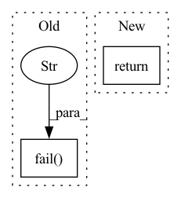

Pattern ID :34695

Before Change
f"Embedding "{config_string}" is unknown. Please check https://onetask.readme.io/ for more information"
)
else:
msg.fail(f"Currently unsupported data type {data_type} of attribute.")
class Embedder(ABC):
def __init__(self, records):
After Change
def get_fitted_model_by_config_string(config_string, records):
if config_string == "identity":
return IdentityEmbedder(records)
elif config_string == "boc":
return BoCEmbedder(records)
elif config_string == "bow":
In pattern: SUPERPATTERN
Frequency: 4
Non-data size: 2
Instances
Fragment ID: 99583334
Project Name: code-kern-ai/kern-python
Commit Name: ab674bf2777f3b4d6cae282bd10312ca6438811e
Time: 2021-11-16
Author: johanneshotter@MBPvonJohannes.fritz.box
File Name: onetask/embedding.py
M Class Name: AnonimousClass
N Class Name: AnonimousClass
M Method Name: get_fitted_model_by_config_string(2)
N Method Name: get_fitted_model_by_config_string(3)
M Parent Class:
N Parent Class:
M File Name: onetask/embedding.py
N File Name: onetask/embedding.py
M Start Line: 10
M End Line: 26
N Start Line: 15
N End Line: 22
'>
Before Change
return
time.sleep(1)
pytest.fail(f"Command did"t reach {state} state after {ticks} secs")
After Change
def wait_for_command_state(command_id: str, state: str, ticks: int = 60) -> None:
return wait_for_task_state("command", command_id, state, ticks)
'>
Fragment ID: 99583331
Project Name: determined-ai/determined
Commit Name: e9f3b1a9ba52335163f145ab534e37a6f0680792
Time: 2022-06-21
Author: ilia.glazkov@hpe.com
File Name: e2e_tests/tests/cluster/utils.py
M Class Name: AnonimousClass
N Class Name: AnonimousClass
M Method Name: wait_for_command_state(3)
N Method Name: wait_for_command_state(3)
M Parent Class:
N Parent Class:
M File Name: e2e_tests/tests/cluster/utils.py
N File Name: e2e_tests/tests/cluster/utils.py
M Start Line: 71
M End Line: 77
N Start Line: 89
N End Line: 89
'>
Before Change
def create_experiment(implementation: NativeImplementation) -> int:
experiment_id = maybe_create_experiment(implementation)
if experiment_id is None:
pytest.fail(f"Failed to create experiment: {implementation}")
return experiment_id // type: ignore
After Change
def create_experiment(implementation: NativeImplementation) -> int:
return create_native_experiment(
implementation.cwd,
implementation.command + ["--config", json.dumps(implementation.configuration)],
)
'>
Fragment ID: 99583329
Project Name: determined-ai/determined
Commit Name: 1bc03ee14d351e58bfb5de12bc8fa607b0fc023d
Time: 2020-04-22
Author: yoavz@determined.ai
File Name: tests/integrations/experiment/test_native.py
M Class Name: AnonimousClass
N Class Name: AnonimousClass
M Method Name: create_experiment(1)
N Method Name: create_experiment(1)
M Parent Class:
N Parent Class:
M File Name: tests/integrations/experiment/test_native.py
N File Name: tests/integrations/experiment/test_native.py
M Start Line: 160
M End Line: 164
N Start Line: 160
N End Line: 163